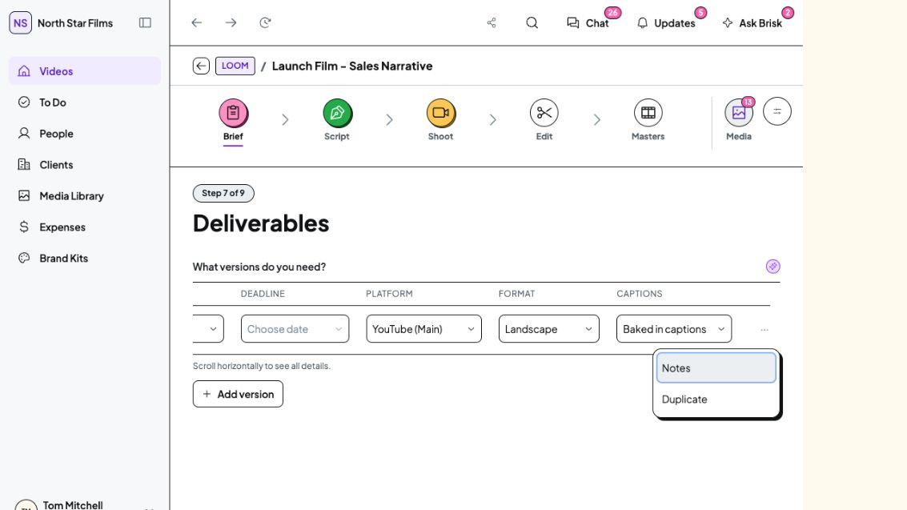
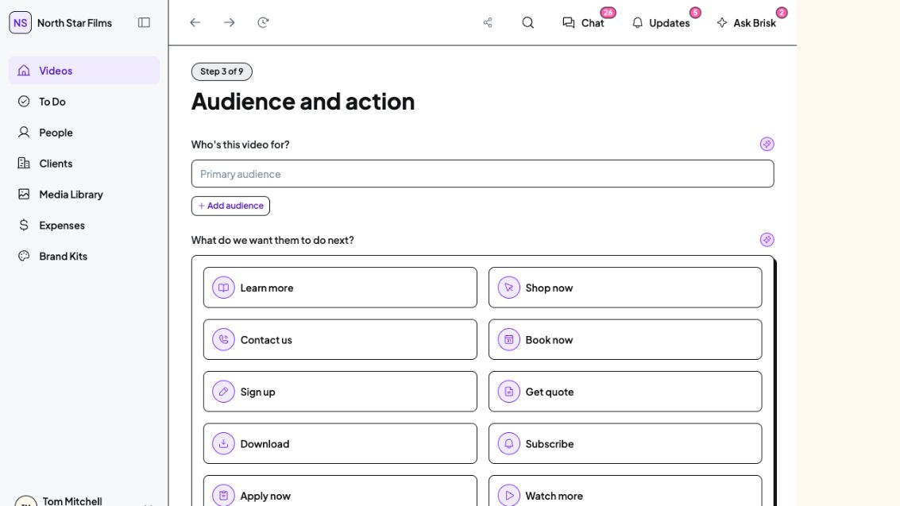

30 October 2026 · Implemented · Awaiting Tom’s visual review
Three Brief usability fixes
Readable production fields, clear orientation between questions, and approval guidance that matches the action. Existing field order, answers, permissions and approval safeguards are preserved.
1. Readable production tables
Short values retain useful room. Narrow desktop tables scroll within their own region, with a visible hint and keyboard access. Main Video and Additional Versions use matching columns; Landscape no longer breaks in the middle of the word.
The row menu uses the existing DS action-menu implementation so the scroll container does not clip its commands.

Actual isolated prototype · Studio Staff · 1133px CSS desktop width · right-hand fields and open row menu. No field value changed for this capture.2. Each question starts in view
Next, Back and the step buttons reveal the new question’s introduction and move focus to its heading. This acts only on explicit step navigation, preserving ordinary answer editing and separate search targeting.

Reproduced the old scrolled state: previous heading at -257px. After changing steps, the introduction is at 89px and heading at 123px, below the 65px header. The heading receives focus.3. Approval guidance matches availability
- Empty Brief: “Add Brief details before approving.” The action remains disabled.
- Eligible, partly completed Brief: “You can still approve this brief.” The action is enabled under the existing rules.
- Restricted role: retains the existing role explanation and restriction.
- Already approved: states that the Brief is approved.
No minimum-content rule, mandatory field, confirmation or approval permission was changed. No Brief was submitted or approved during verification.
Checks and preservation
TypeScript passed, the Brief route returned HTTP 200, and the desktop interactions above were checked in a separate local origin. The working browser’s data was not operated on. No mock records, assets, DS exports or dependencies were changed in this batch.
Detailed checks and bounded verification gaps
No mobile pass, tests, production build, commit or push. Captures retain the native screenshot area, which is smaller than the emulated viewport height; they are not full-page screenshots.